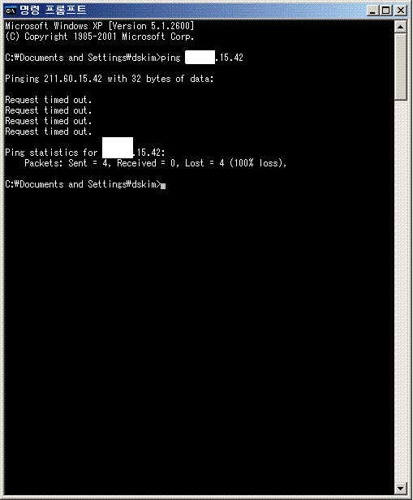

POSTS
추억의 IP
지금 다니는 회사는 인터넷 공유기를 사용해서
직원들에게 공인 IP가 지급되지 않지만
첫직장에서는 공인아이피를 지급했었다.
지금도 가끔 집에서 회사pc로 VNC 접속하려고 할 때 습관적으로 예전 직장의 IP로 접속하려 할 때가 많다.
어이없음에 피식 웃고 말지만
지금 생각해보니
그 아이피가 단순한 숫자가 아니었다는 생각이 든다.
마치 고향집 전화번호 같다. 나와 contact 할 수 있는(있었던 ^^) 기호.
” 처음 뵙겠습니다. ^^ 저는 아이피 xxx.xxx.15.42를 쓰는 김동석입니다.
하하~ 아이피 번호가 어떻게 되시죠? 혹시 FTP나 웹서버 돌리고 계신가요?
저는 요새 톰캣돌리고 있습니다. ㅎㅎ 한번 방문해주십시오. 게시판도 있어요~”
누군가 사용하고 있지 않을까 하는 기대로 ping 날려보는데,, Request Timed Out…
벌서 퇴근하셨나? 요새 젊은 프로그래머들 못써먹겠군… ㅋㅋㅋ
